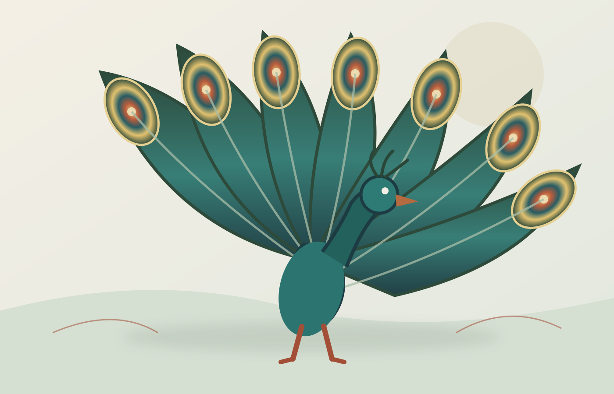
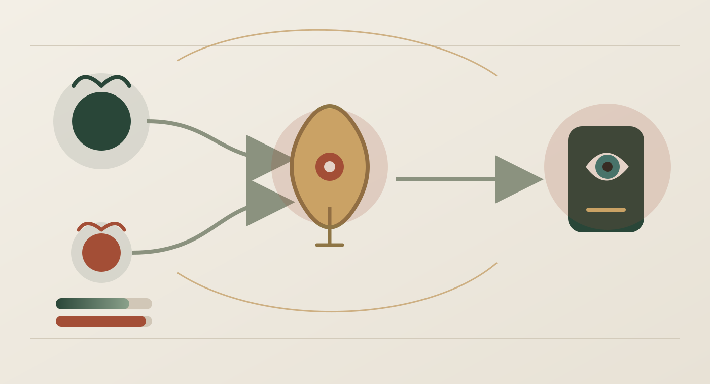

ביולוגיה אבולוציונית · תורת המשחקים · כלכלה וחברה
המסר היקר: מה זנב הטווס מלמד על תעודות, יוקרה ואמון
זנב מפואר שמקשה על הבריחה, קפיצות שמבזבזות זמן מול טורף ותואר אקדמי שמאותת למעסיק על יכולת: כולם מעלים שאלה אחת — איך אפשר להוכיח לאחרים משהו שהם אינם יכולים לראות בעצמם? עקרון ההכבדה של אמוץ זהבי הציע תשובה נועזת. המחקר שבא בעקבותיו גילה שהאות האמין אינו חייב להיות בזבזני, ולעיתים דווקא יעילותו היא שמסבירה את כוחו.
כאשר צבי תומסון מבחין בכלב בר, הוא לא תמיד פותח מיד במנוסה. לעיתים הוא מנתר לגובה, ארבע רגליו באוויר, וחוזר על התנועה שוב ושוב. ההתנהגות הזאת — המכונה באנגלית stotting, ובעברית אפשר לתארה כניתור ראווה — נראית במבט ראשון כהחלטה משונה: בעל חיים שנמצא בסכנה מבזבז זמן ואנרגיה במקום להתרחק. אבל ייתכן שהקפיצות אינן מיועדות לחבריו לעדר כלל. הן עשויות להיות מסר לטורף: ראיתי אותך, ואני בכושר טוב מספיק כדי לברוח. אם כך, הצבי אינו רק נמלט; הוא מנהל משא ומתן קצר על כדאיות המרדף.

השאלה שמסתתרת מאחורי הצבי והטווס היא בעיית אמינות: אם לפרט חלש יש תמריץ להיראות חזק, מדוע שהצד השני יאמין לו? בטבע, כמו בשוק העבודה או בפוליטיקה, מידע חשוב אינו תמיד גלוי. נקבה אינה יכולה למדוד ישירות את בריאותו של זכר, וטורף אינו יודע מראש איזו טרף יצליח לתפוס. אם כל פרט יכול לייצר את אותו אות בלי לשלם מחיר, האות עלול לאבד את ערכו. בשנת 1975 הציע הזואולוג הישראלי אמוץ זהבי פתרון פרובוקטיבי: אולי דווקא המחיר הוא שמעניק לאות את אמינותו.
מה בעצם עולה כאן כסף?
זהבי כינה את הרעיון עקרון ההכבדה — Handicap Principle. המילה "הכבדה" אינה מתייחסת למוגבלות, אלא לנטל שמקטין במידה מסוימת את סיכויי ההישרדות או הרבייה של נושא האות. לפי הגרסה הקלאסית של ההצעה, תכונה בולטת כמו זנב הטווס יכולה להיות אמינה מפני שהיא יקרה לתחזוקה, מכבידה על התנועה או מגדילה את החשיפה לטורפים. פרט שאינו מסוגל לשאת את המחיר יתקשה לזייף אותה לאורך זמן. האות אינו רק אומר "אני חזק"; הוא מדגים יכולת לשאת מחיר שאחרים אינם יכולים לשאת באותה מידה.
כאן חשוב לדייק: לא כל דבר יקר הוא אות אמין. אם תכונה עולה לכל הפרטים אותו מחיר, גם החלשים יכולים אולי לרכוש אותה. מה שחשוב הוא שהעלות תהיה שונה בין סוגי פרטים. אותו מאמץ, סיכון או משאב צריכים לפגוע פחות בפרט שמצבו טוב יותר. במונחים של ביולוגיה אבולוציונית, אין די בעלות אנרגטית; צריך לבחון את המחיר במונחי כשירות — התרומה הצפויה להישרדות ולהעמדת צאצאים. מחיר של עשר יחידות אנרגיה עשוי להיות זניח עבור פרט אחד ומכריע עבור אחר.
גם ההבחנה בין "אות" לבין "מדד" חשובה. מדד הוא תכונה שמספקת מידע מפני שהיא קשורה באופן ישיר למצב שאותו מבקשים להעריך; אות הוא תכונה או פעולה שמפיק השולח ושעשויה להתפתח בתוך מערכת תקשורת. הגבול אינו תמיד חד, אבל השאלה המשותפת היא מי יודע מה, מי מנסה לשכנע את מי, ומה מונע מן השולח להטעות את המקבל.

הטווס, הצבי והבעיה הדרווינית
הטווס היה חידה עוד לפני זהבי. צ'רלס דרווין התקשה להסביר כיצד תכונה מפוארת, שעלולה להקשות על בריחה ולמשוך תשומת לב, מתפשטת באוכלוסייה. במוצא האדם והברירה ביחס למין משנת 1871 הוא פיתח את רעיון הברירה הזוויגית: תכונות מסוימות אינן משפרות בהכרח את סיכויי ההישרדות, אך הן עשויות להגדיל את ההצלחה בהשגת בני זוג. בחירה של נקבות, תחרות בין זכרים והצטברות של העדפות לאורך דורות עשויות להפוך קישוט לכאורה מיותר לתכונה נפוצה. הטקסט המקורי של דרווין מראה עד כמה מרכזית הייתה בעיניו שאלת הקישוטים והבחירה המינית.
זהבי הוסיף לדיון שכבה אחרת. לא רק שהנקבה מעדיפה זנב מפואר; ייתכן שהזנב משמש מבחן. הוא עשוי לאותת שהזכר מסוגל לשאת את החיסרון שהוא עצמו יוצר. ההצעה הזאת אינה זהה לכל הסבר של ברירה מינית, והיא לא מבטלת מנגנונים אחרים, כגון העדפה אסתטית שמתחזקת את עצמה לאורך דורות או יתרונות גנטיים אפשריים לצאצאים.
הראיות לגבי הטווס אינן חד-משמעיות. מחקר של מריון פיטרי, טים הולידיי וקרולין סנדרס משנת 1991, שהתבסס על זירת חיזור אחת ובה עשרה זכרים, מצא קשר בין מספר ה"עיניים" בנוצות הזנב לבין הצלחת ההזדווגות. החוקרים ייחסו יותר ממחצית מהשונות בהצלחה להבדלים במבנה הזנב. לעומת זאת, מחקר בן שבע שנים באוכלוסיית טווסים ביפן, שפורסם ב־2008, לא מצא שנקבות בחרו בהכרח זכרים בעלי זנבות ארוכים או מרובי כתמים. ההבדל אינו מבטל את הברירה המינית; הוא מזהיר מפני הפיכת תצפית אחת לחוק טבע אוניברסלי.
גם הצבי המקפץ מספק ראיה מסקרנת, לא פסק דין. מחקרם של פיצגיבון ופאנסהאו משנת 1988 מצא שצבי תומסון נטו לנתר יותר בתגובה לטורפים שרודפים במרדף ממושך, כמו כלבי בר, מאשר לטורפים המתקרבים בהתגנבות, כמו ברדלסים. הצבאים שנבחרו למרדף נטו לנתר פחות מאלה שלא נבחרו, ואלה שנמלטו בהצלחה ניתרו יותר מאלה שנלכדו. החוקרים הציעו שהניתור עשוי להעביר לטורף מידע על יכולת הבריחה. אולם עדיין יש מקום להסברים נוספים: אולי הצבי מודיע לטורף שהוא כבר זוהה, אולי הוא מזהיר פרטים אחרים, ואולי אותה תנועה ממלאת תפקידים שונים בנסיבות שונות.
כשהביולוגיה פוגשת את תורת המשחקים
הקושי הגדול של זהבי היה להפוך רעיון אינטואיטיבי למנגנון שאפשר לנסח ולבדוק. בשנת 1990 פרסם הביולוג המתמטי אלן גרייפן את המאמר Biological Signals as Handicaps, שבו בנה מודל של אסטרטגיות איתות. המודל השתמש ברעיון של אסטרטגיה יציבה מבחינה אבולוציונית (ESS): מצב שבו אסטרטגיה שכיחה אינה ניתנת לפלישה מוצלחת של אסטרטגיה מוטנטית נדירה. במילים פשוטות, אם רוב הפרטים פועלים בדרך מסוימת, פרט שינסה לרמות לא בהכרח ירוויח מכך.
כאן תורת המשחקים מעניקה לביולוגיה שפה מדויקת. יש שולח שמכיר את מצבו טוב יותר מן המקבל, ויש מקבל שמנסה להסיק ממנו מסקנה. אם לפרטים מסוגים שונים יש עלויות שוליות שונות להפקת האות, ייתכן שיתפתח שיווי משקל מפריד: סוג אחד ישלח אות חלש וסוג אחר אות חזק, והמקבל ילמד להבחין ביניהם. המפתח אינו שהאות יהיה בזבזני באופן מוחלט, אלא שהחיקוי יהיה פחות משתלם לסוג שאינו מסוגל לשאת את ההשקעה.
הקשר הזה בין ביולוגיה למשחקים אינו מקרי. גרייפן עצמו דן במודלים מקבילים בכלכלה, ותיאוריית האיתות הכלכלית התפתחה כמעט באותן שנים סביב בעיה דומה: כיצד מקבלים החלטות כשאחד הצדדים יודע על עצמו יותר מכפי שהצד השני יודע עליו.
תעודה, חליפה ומכונית: האותות של שוק העבודה
ב־1973, שנתיים לפני מאמרו של זהבי, פרסם הכלכלן מייקל ספנס את Job Market Signaling. מעסיק אינו יודע מראש מהי תפוקתו של מועמד לעבודה. המועמד מכיר את יכולותיו טוב יותר, אבל הצהרה כמו "אני מוכשר" אינה ראיה חזקה: גם מועמד שאינו מתאים יכול לומר אותה. ספנס הראה כיצד השכלה עשויה לתפקד כאות. אם רכישת תעודה קשה יותר, מבחינת זמן, מאמץ או עלות חלופית, לאנשים בעלי יכולת נמוכה, היא עשויה לעזור למעסיק להבחין בין סוגי מועמדים.
אין פירוש הדבר שהשכלה אינה מלמדת דבר. המודל של ספנס מבודד תפקיד אפשרי אחד שלה — העברת מידע — ואינו טוען שזהו תפקידה היחיד או העיקרי בכל מערכת חינוך. תואר יכול להקנות ידע ומיומנויות ובו בזמן לשמש אות. ההבחנה חשובה משום שמערכת שמסתמכת יותר מדי על תעודות עלולה להעלות את סף הכניסה לעבודה בלי להגדיל באותה מידה את הכישורים הנדרשים. הרצאת הנובל של ספנס משנת 2001 מסבירה כיצד איתות קשור למידע א־סימטרי בשווקים.
כאן נכנס גם הסוציולוג והכלכלן תורסטיין ובלן. בספרו The Theory of the Leisure Class משנת 1899 הוא תיאר צריכה ראוותנית: שימוש במוצרים יקרים, בזמן פנוי ובסגנון חיים כדי להציג עושר ומעמד. ההקבלה לזנב הטווס מפתה, אך אין לזהות בין התופעות. אצל ובלן מדובר במוסכמות חברתיות, במאבקי יוקרה ובחיקוי מעמדי; בטבע מדובר בתהליכים אבולוציוניים. ובכל זאת, שתי המסגרות מחדדות שאלה משותפת: מתי הוצאה נראית לעין מספקת מידע אמין על יכולתו של מי שמשלם אותה?
גם כאן המחיר יחסי. שעון יקר עשוי להיות הוצאה זניחה עבור אדם אחד ומעמסה כבדה עבור אחר. אבל בני אדם יכולים ללוות כסף, לזייף מותגים או לאמץ סגנון לבוש שמייצר רושם שאינו תואם את מצבם הכלכלי. לכן אותות אנושיים נשענים לא רק על מחיר, אלא גם על אמון, מוסדות, מוניטין, נורמות תרבותיות והיכולת של הקהל לבדוק את הטענה. אות חברתי אינו חותמת אמת אוטומטית.
גם עזרה לאחרים יכולה להיות אות?
הדיון נעשה מורכב עוד יותר כאשר עוברים מקישוטים ומוצרים להתנהגות זולתנית. אמוץ ואבישג זהבי חקרו במשך שנים את הזנבנים, ציפורי שיר חברתיות החיות בקבוצות במדבר. במחקר שפורסם ב־2015 ונוסח בגרסה מעודכנת ב־2016, תוארו שנים-עשר קבוצות שבהן פרטים התחרו על תפקיד השמירה מפני טורפים. הזכר הדומיננטי שמר יותר מאחרים ולעיתים החליף שומר כפוף זמן קצר לאחר שזה עלה לעמדה. החוקרים הציעו שהתנהגות שנראית כהקרבה למען הקבוצה עשויה להיות גם זירה של מעמד ותחרות.
הפרשנות הזאת אינה אומרת שכל עזרה היא תחבולה, או שכל שיתוף פעולה נועד לפרסום עצמי. קרבת משפחה, הדדיות, תועלת משותפת ולחצים אקולוגיים יכולים להסביר התנהגות מסייעת. אבל מחקר הזנבנים מזכיר שהמעשה עצמו אינו מגלה את מניעיו: שמירה על הקבוצה יכולה להועיל לקבוצה ובו בזמן לשפר את מעמדו של השומר. התנהגות חברתית עשויה לשאת כמה תפקידים בעת ובעונה אחת.
האם אמינות באמת חייבת לעלות ביוקר?
במשך שנים רבות נתפס עקרון ההכבדה כהסבר מרכזי לאותות אמינים. אבל בעשורים האחרונים התחדדה ביקורת תיאורטית: עלות כשלעצמה אינה מספיקה כדי להבטיח אמינות, ואות אמין אינו חייב להיות יקר בנקודת שיווי המשקל. סקירה ביקורתית של דסטין פן ושבולץ סאמאדו, שפורסמה ב־Biological Reviews ב־2020, טענה שהמודל של גרייפן אינו מאשש את הגרסה המחמירה של עקרון ההכבדה, וכי תוצאותיו הובנו לעיתים באופן רחב מדי.
מחקר פתוח ב־BMC Biology משנת 2023 הרחיב את הטענה באמצעות מודלים מתמטיים של משחקי איתות: בתנאים שנבדקו, אותות אמינים יכולים להתקיים גם כאשר עלותם בשיווי המשקל אפסית, ואף כאשר הם מועילים לשולח. החוקרים הציעו להתמקד בפשרות (trade-offs) — מה הפרט מרוויח ומפסיד בין רכיבים שונים של הצלחתו — במקום להניח שהמחיר המוחלט הוא שמחזיק את האמינות. אלו תוצאות של מודלים, לא הוכחה שכל אות בטבע פועל כך; אך הן מערערות את הטענה שאמינות מחייבת תמיד בזבוז.
לכן נכון להפריד בין התובנה הפורייה של זהבי לבין הטענה הגורפת שנקשרה בשמו. התובנה היא שאותות מתקיימים בתוך יחסים של מידע חלקי וניגוד אינטרסים, ושכדי להבין אותם צריך לשאול מדוע רמאי אינו יכול להעתיק אותם בקלות. התשובה עשויה להיות מחיר שונה, תועלת שונה, מגבלה פיזית, אינטרסים חופפים, מוניטין או מנגנון אחר. אין מנגנון יחיד שמסביר כל תקשורת בטבע ובחברה.
אות אמין אינו בהכרח האות היקר ביותר. הוא האות שהקשר בינו לבין המידע שהוא נושא קשה לניתוק — וקשה לנצל אותו לרעה.
זנב הטווס, קפיצת הצבי, תעודת האוניברסיטה והמכונית היוקרתית אינם מופעים של אותו חוק פשוט. הם מקרים שונים שבהם צופה מנסה להסיק דבר שאינו יכול לראות ישירות. עקרון ההכבדה לימד אותנו לחשוד דווקא בסימנים שנראים מיותרים: לפעמים מה שנראה כבזבוז הוא השקעה בתקשורת. הביקורת המאוחרת לימדה אותנו לא פחות — שהמחיר אינו קסם, ושהסבר טוב חייב להראות בדיוק מי משלם, מי מרוויח, ומה מונע מן האות להפוך להצגה ריקה.
חמישה דברים שכדאי לזכור
- עקרון ההכבדה נוסח בידי אמוץ זהבי במאמר משנת 1975.
- אות אמין אינו חייב להיות יקר לכולם; חשובה העלות היחסית לסוגים שונים של שולחים.
- הצבי המקפץ והטווס המפואר הם דוגמאות מעוררות מחשבה, אך הראיות האמפיריות תלויות במין, באוכלוסייה ובהקשר.
- תורת האיתות של מייקל ספנס מסבירה כיצד השכלה יכולה לשמש גם אות בשוק העבודה, לצד תפקידה בהקניית ידע.
- מחקר עכשווי מערער על הטענה שעלות היא תנאי הכרחי לאמינות; יש לבחון פשרות, תמריצים ומבנה אינטראקציה.
שלוש שאלות למחשבה
- מתי הוצאה גדולה היא ראיה אמינה ליכולת, ומתי היא רק יוצרת רושם שאפשר לקנות?
- האם תעודה אקדמית מעידה בעיקר על מה שאדם למד, או גם על יכולתו לעמוד בתהליך ארוך ותובעני?
- כיצד אפשר להבחין בין עזרה אמיתית לאחרים לבין התנהגות שמקנה למבצע מעמד — והאם שתי האפשרויות חייבות לסתור זו את זו?
לקריאה נוספת
- Amotz Zahavi, “Mate Selection—A Selection for a Handicap” (1975) — המאמר המקורי שהציג את ההצעה.
- Alan Grafen, “Biological Signals as Handicaps” (1990) — הניסיון המתמטי למסד את עקרון ההכבדה.
- Dustin J. Penn & Szabolcs Számadó, “The Handicap Principle: how an erroneous hypothesis became a scientific principle” (2020) — סקירה ביקורתית של התפתחות הרעיון.
- Számadó et al., “Honesty in signalling games is maintained by trade-offs rather than costs” (2023) — מודלים המציעים הסבר חלופי לאמינות.
- Michael Spence, “Job Market Signaling” (1973) — המאמר הקלאסי על איתות בשוק העבודה.
- Thorstein Veblen, The Theory of the Leisure Class (1899) — המקור הקלאסי לדיון בצריכה ראוותנית.
- Fitzgibbon & Fanshawe, “Stotting in Thomson’s gazelles: an honest signal of condition” (1988) — מחקר שדה על ניתורי צביי תומסון.
- Avishag Zahavi, “Competition over guarding in the Arabian babbler” (2016) — מחקר על תחרות סביב תפקיד השמירה.
הערך המקורי: עקרון ההכבדה — ויקיפדיה העברית.
הערת בחירה: הערך אומת כערך קיים ונגיש בוויקיפדיה העברית. הנושא נבחר בבחירה עריכתית ולא בשליפה אקראית: נקודת הקצה של Wikipedia API לא הייתה נגישה במהלך ההפעלה, ולכן אין כאן טענה לבחירה אקראית.